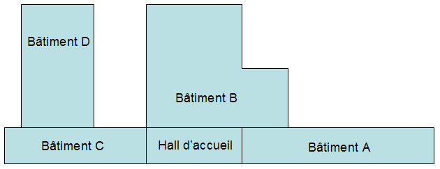
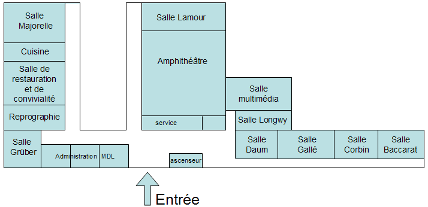
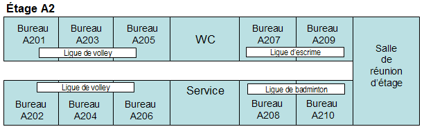
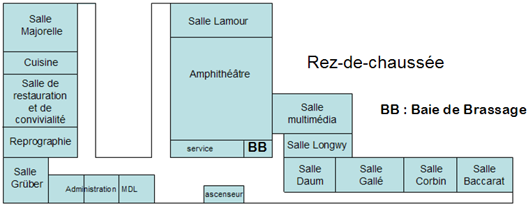
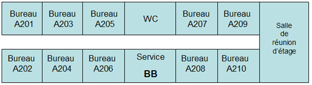

Les ligues disposent d'un accès Internet mutualisé que la M2L loue à un prestataire extérieur.
Dans tous les espaces, un réseau Wifi "visiteurs" est disponible, avec une clé WPA renouvelée régulièrement et communiquée aux ligues. Ce réseau ne permet que l'accès à Internet.
Dans les bâtiments anciens A et B, les salles et bureaux sont équipés de prises de téléphone analogiques. La M2L y fournit les combinés téléphoniques. Dans les bâtiments neufs C et D, l'équipement téléphonique est de type VoIP. La M2L loue des postes téléphoniques IP aux ligues.>
Une machine à affranchir permet un affranchissement rapide et en nombre. Cette prestation est facturée aux ligues au coût de l'affranchissement. Chaque mois, on relie la machine à affranchir à une imprimante pour obtenir une liste de codes de gestion correspondant aux ligues associés à une quantité et un type d'affranchissement. La prise en compte de ces informations permet au CROSL d'éditer des factures.
Les ligues disposent de la possibilité d'imprimer sur des ressources d'impression numériques connectées situées dans le local reprographie du rez-de-chaussée dont l'usage fait l'objet d'une facturation à prix coûtant. Un système de comptage situé sur le serveur d'impression permet au CROSL d’effectuer une facturation mensuelle auprès des ligues. Une photocopieuse noir et blanc à 70 pages/minute avec différents dispositifs de finition. Une imprimante Laser couleur A4/A3 à encre solide à 25 pages/minute. Un traceur A2 (1 page / minute) utilisé pour les affiches et banderoles.
La M2L met à disposition des ligues un serveur FTP documentaire intranet/internet regroupant des textes légaux, des modèles de dossiers, de statuts, des programmes de formation (...) compilés par le CROSL.
La M2L met à disposition des ligues un site web de réservation des salles (réunions, amphithéâtre, restauration). Ce site est accessible en intranet, mais aussi depuis l'internet. Les réservations payantes sont facturées par la Région aux utilisateurs. L’administration de la M2L lui communique les informations nécessaires à cette facturation de façon hebdomadaire.
La M2L met à disposition des ligues un site web d'information sur le digicode permettant l'accès à la M2L ainsi que sur la clé Wifi "visiteurs". Le système de réservation donne également le digicode du jour dans le compte-rendu de réservation envoyé automatiquement par mail.
M2L gère à travers un logiciel de gestion des configurations l'ensemble du parc informatique incluant les postes fixes des ligues.
Lorsque les ligues acquièrent du matériel informatique, il y a une phase obligatoire d'intégration qui consiste à :
Cette intégration est contractualisée. Les ligues et CD étant toutes des structures associatives indépendantes, leurs postes ne sont pas intégrés dans un annuaire central. Par contre, les postes de l'administration de la M2L et de la salle multimédia le sont.
Lorsque les structures hébergées s'équipent d'imprimante réseau, la connexion en est réalisée par l'informaticien bénévole du CROSL, sans passer par un serveur d'impression. Le nom de l'imprimante est lui aussi codifié de la même façon que celui des postes (la lettre L vient remplacer la lettre P).
Le CRIB (Centre Régional d'Information des Bénévoles) est un label donné au CROSL qui, entre autres missions d'information (sur les textes réglementaires, la convention nationale du sport ...), propose un service d'établissement de bulletins
de salaires aux ligues et à leurs clubs affiliés. Le CROSL est tiers de confiance pour l'URSSAF et, à ce titre, établit des bulletins de salaires réglementaires et tous les documents annexes. La prestation est facturée au forfait (60
€ par an) et au bulletin édité (5 €). Un employé du CROSL est affecté à cette mission à raison de 0,8 ETP.
Illustration du processus pour une ligue qui fait établir ses bulletins de salaires par le CRIB, pour des animateurs à la vacation, comme pour ses employés permanents.
- La ligue établit une « déclaration unique d'embauche » et un contrat de travail.
- Les données "salaires" sont envoyées par les associations au CRIB avant le 15 du mois :
Le CROSL offre un catalogue diversifié de formations aux bénévoles des clubs affiliés aux ligues (législation, éthique, comptabilité associative, etc.). Les ligues organisent également des formations, en général plus techniques, sur l'usage de logiciels spécifiques de gestion des clubs ou des compétitions sportives.
Le site se compose de quatre bâtiments, dont deux dotés de quatre étages et donc de 5 niveaux (les bâtiments A et C) et deux de plain-pied (les bâtiments B et D) dotés d’un seul rez-de-chaussée. Les bâtiments C et D sont neufs. Les bâtiments A et B datent d'une quinzaine d'années. Les étages des bâtiments A et C hébergent les bureaux des ligues locataires et le rez-de-chaussée des quatre bâtiments héberge des espaces mutualisés : un amphithéâtre de 200 places avec une régie, 8 salles de réunion de 12 à 50 places, un hall d'accueil, une salle de convivialité et son office traiteur, ainsi qu'une salle de formation multimédia dotée de 24 postes. On y trouve également la partie « accueil » des neuf bureaux de l'administration de la M2L.
L’autre partie se trouve au premier étage du bâtiment C. Différents locaux de service (archives, stockage local d'entretien ...) se trouvent en sous-sol. En fonction de leur taille, les 24 structures hébergées occupent un ou plusieurs bureaux. Au total, la M2L offre 80 bureaux. A chaque étage des bâtiments de bureaux se trouve une petite salle de réunion que les ligues utilisent sans réservation. L'ensemble des autres salles ressources sont accessibles sur réservation, en journée comme en soirée.
  Pour ce qui est des ordinateurs et des outils d'impression, la M2L ne dispose que de ses propres équipements, dans les bureaux d'administration du CROSL et dans la salle multimédia. Les bureaux des ligues sont équipés par les ligues elles-mêmes (hors mobilier de base). Des ressources d'impression mutualisées payantes sont néanmoins disponibles à l'administration de la M2L.
Chaque bureau de ligue du bâtiment A dispose de deux prises Ethernet de catégorie 5 et d'une prise téléphonique. Dans le nouveau bâtiment C, ce sont trois prises Ethernet de catégorie 6 qui sont disponibles dans chaque bureau pour connecter du matériel
informatique ou un appareil de téléphonie IP.
Chaque salle de réunion dispose d'une prise Ethernet pour la connexion d'un PC portable au réseau (de catégorie 5 dans le bâtiment B et 6 dans le bâtiment D). Elle dispose en outre d'un système fixe de vidéo projection, mais pas d'ordinateur
à demeure.
L'amphithéâtre dispose de 4 prises Ethernet de catégorie 5 sur le pupitre. Il dispose également d'un système de vidéo projection sur grand écran. Une prise Ethernet est disponible également dans la régie.
Les bureaux d'administration de la M2L disposent en tout de 27 prises de catégorie 6, pour les neuf bureaux. La salle de reprographie est dotée de 4 prises Ethernet de catégorie 6 pour les systèmes d’impression numériques connectés.
Un système de diffusion d'informations est installé sur 3 écrans 42" dans les espaces de circulation. Ils servent essentiellement à l'information des visiteurs sur les lieux de réunion. Les écrans d'information sont renseignés depuis l'administration
de la M2L.
Un réseau Wifi gratuit est disponible pour les visiteurs dans les espaces de réunion du rez-de-chaussée, mais également dans les étages des bureaux des ligues (les bornes y sont positionnées en quinconce d'un étage à l'autre).
Il y a eu un laps de temps important entre la construction des bâtiments A et B (construits au début des années 90) et C et D (tout dernièrement construits, en 2010).
Pour le bâtiment A, on trouve une armoire de brassage secondaire pour chacun des 4 niveaux d'implantation des bureaux de ligues. Chacune de ces armoires regroupe 22 prises Ethernet : 20 vers les bureaux, une vers la borne Wifi et
une vers la salle de réunion. On trouve un commutateur 26 ports dans chacune de ces armoires (24 ports 10/100 et deux ports Giga combo RJ-45 / SFP). Ces armoires de brassage sont connectées à une armoire centralisatrice au rez-de-chaussée,
dans un petit local climatisé du bâtiment B.
Pour le nouveau bâtiment C, on a positionné une seule armoire de brassage au niveau quasi central du second étage du bâtiment. Cette armoire réunit 128 prises, 32 par étage (3 par bureau, une prise pour la salle de réunion et une
pour la borne wifi). On y trouve 4 commutateurs 48 ports, dont tous les ports sont utilisables en gigabits/s. Cette armoire est connectée en fibre optique à l'armoire centralisatrice du bâtiment B.
Les salles du RDC des nouveaux bâtiments C et D (salles à réservations, bureaux d'administration de la M2L, la salle de reprographie) ainsi que les bornes Wifi et les 3 écrans d'information sont tous connectés à l'armoire de brassage
principale du bâtiment B dans laquelle on trouve 2 commutateurs à 24 ports et un routeur. C'est également le lieu d'implantation de l'armoire à serveurs.
Au Rez-de-chaussée
Dans un étage du bâtiment A
C'est au rez-de-chaussée, dans la baie de brassage principale du bâtiment B que sont regroupés les différents réseaux au moyen de 2 commutateurs-routeurs 24 ports empilés, l'accès Internet et l'accès téléphonique standard et IP.
La M2L dispose actuellement :
L'administration de la M2L dispose de plusieurs serveurs :
R. Les personnes qui travaillent ici sont de différentes catégories. Il y a d’abord ceux que j’appelle les «professionnels». Il y a deux employés du Conseil Régional (des factotums). Il y a sept ETP (Équivalents Temps Plein) employés par le CROSL ; il y a le personnel des prestataires (gardiennage, ménage) et les salariés des ligues. Ensuite, il y a les bénévoles qui sont les élus des associations : CROSL, CDOS, ligues, comités départementaux. Il y a également les élus du Conseil Régional et enfin tous les autres : visiteurs, stagiaires, etc.
R.Nous avons 2,25 ETP « région », les deux factotums dont je vous parlais précédemment, et moi, qui suis employé, pour un quart de mon poste, par le conseil régional. Cela s’explique par le fait que je ne pourrais avoir logiquement d’autorité sur les personnels « Région » si je n’en fais pas partie moi-même. Les autres ETP du CROSL sont les suivants :
R. Ce dispositif répond à la volonté des pouvoirs publics de développer, en faveur des associations, une gamme de simplifications et de services en matière d'aide à l'emploi, comme la gestion des paies et l'assistance comptable. Ce service est offert à toutes les associations de moins de 10 ETP : clubs sportifs, associations culturelles... Impact Emploi est un logiciel développé par l' URSSAF qui permet d'établir le bulletin de salaire et de fournir l'ensemble des déclarations sociales et fiscales, qu'elles soient mensuelles, trimestrielles ou annuelles. Tout cela, simplement à partir de quelques données : le nombre d'heures travaillées, leur nature et les éléments de rémunération bruts ou nets (salaire, prime, avantages en nature, indemnités de frais, etc.). Ce logiciel est confié gratuitement à des tiers de confiance qui exécutent les opérations pour le compte de l'association. Le tiers de confiance est souvent une structure qui fédère le milieu dans lequel évolue l'association. Ainsi, le CROSL a reçu le label « CRIB » (Centre de Ressources et d’Information des Bénévoles) pour devenir tiers de confiance pour l’URSSAF qui met à notre disposition ce fameux logiciel. Nous demandons 60 € de cotisation annuelle par association et nous facturons 5 € par fiche de paie. Nous produisons bien évidemment toute la panoplie légale de documents : récapitulatifs périodiques, déclarations URSSAF et ASSEDIC, organismes de retraite. Nous pouvons gérer des virements automatiques : prélèvement sur le compte des associations et versement sur le compte des salariés ou encore prélèvement direct sur les comptes des associations au crédit des organismes sociaux. En 2009, nous avions 72 associations abonnées pour un total de 332 salariés, ce qui représentait 2,8 millions d’euros de masse salariale, soit 15 % de la masse salariale totale du sport lorrain. En tant que centre labellisé « CRIB » nous apportons également des conseils aux associations qui emploient du personnel. Ces conseils portent sur le respect de la législation, sur le remboursement des déplacements, sur les litiges éventuels. Nous disposons de toute l’information utile pour mener à bien cette mission de conseil. En ce moment, sous l’impulsion du ministère, nous œuvrons au développement de l’usage du chèque emploi associatif.